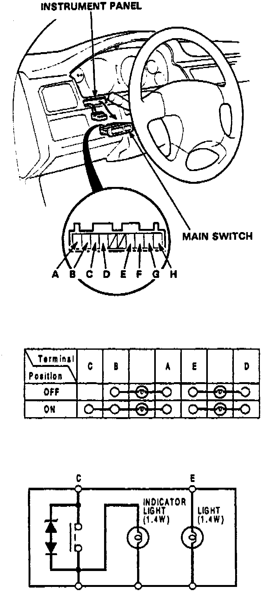

Cruise Control Main Switch Inspection
Fig. 16 Main Switch:

1. Remove switch from instrument panel and check for continuity between terminals as shown in Fig. 16.
2. If there is no continuity within one or more terminals, replace switch.
3. Reverse procedure to install.